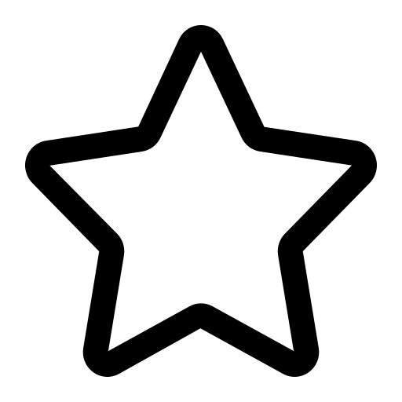
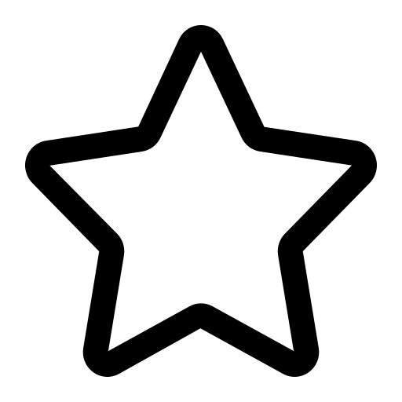

The witcher
Notes:
 

18+
Adaptation Live de la saga littéraire du Sorceleur. Le sorceleur Geralt, un chasseur de monstres mutant, se bat pour trouver sa place dans un monde où les humains se révèlent souvent plus vicieux que les bêtes.